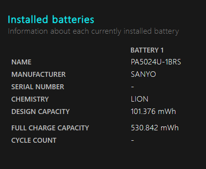

Cara cek ketahanan baterai
Durasi pengetesan
rekomendasi pengetesan selama 10 menit
Persentase
Hitung
Reset
...
Cara cek kesehatan baterai
Klik Start dan ketik CMD
Ketik pada CMD script berikut:
powercfg/batteryreport
Lalu tekan Enter
Selanjutnya ketik "batt" lalu tekan Tab, lalu tekan Enter
